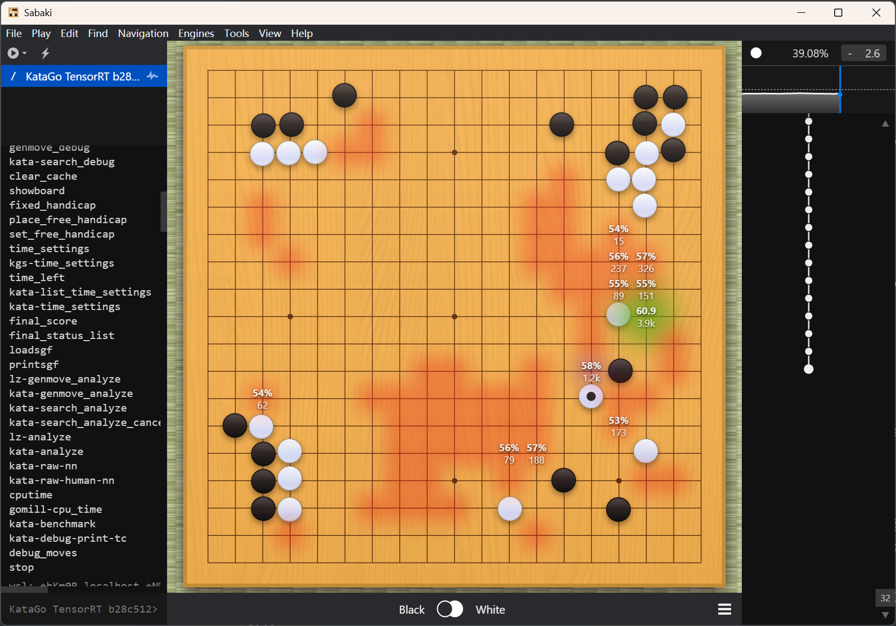

Windows个人电脑部署开源围棋AI模型KataGo
🚀 背景与目标
传统纯 Windows 部署方式缺乏统一的包管理机制，手动配置 CUDA、cuDNN 和推理后端极易出错。本文采用 WSL（Windows Subsystem for Linux）+ Ubuntu 24.04 + TensorRT 的组合方案，在保留 Windows 图形界面体验的同时，利用 Linux 成熟的深度学习生态，实现 KataGo 的高性能 GPU 加速推理。目标是在一台配备 RTX 4060 笔记本电脑（8GB 显存、32GB 内存）上，稳定运行 b28c512 模型，并通过 Sabaki 提供流畅的图形化对局与分析功能。
🧩 关键组件与作用
WSL
本文采用 WSL 来部署 KataGo，其 Linux 发行版是 Ubuntu 24.04，原因在于 Windows 没有统一的包管理系统，所以每一步都要手动操作，相当麻烦。而 Linux 系统则方便得多，以下是两者在部署过程中各环节的对比。
| 环节 | Windows | Linux |
|---|---|---|
| 驱动安装 | 必须先装 NVIDIA 官方 .exe 驱动 |
可通过 ubuntu-drivers 自动推荐并安装 |
| CUDA Toolkit 安装 | 下载 .exe 或 .zip，手动运行安装程序 |
一条命令：sudo apt install cuda-toolkit-12-8 |
| 环境变量设置 | 需手动添加 PATH 和 CUDA_PATH 到系统变量 |
包管理器自动配置 /etc/environment |
| 库依赖管理 | DLL 文件需手动放置或注册 | apt 自动解决所有依赖（如 cuBLAS, cuDNN） |
此外，整个人工智能和科学计算的生态都是围绕 POSIX 和包管理构建的，绝大多数从事深度学习研究、开发和部署的专业人员都使用 Linux 或 macOS，所以考虑到未来的程序兼容性，使用 WSL 部署 KataGo 方便之后部署和管理更多的相关开源项目。WSL 不是传统虚拟机，因此其性能损失不大，尤其在 GPU 加速场景下，它的性能损耗极小，通常小于5%，所以不用担心在 WSL 上部署 Katago 导致严重的性能损失。
Tip
POSIX（Portable Operating System Interface）是一组由 IEEE 制定的操作系统接口标准，目的是让软件能在不同 Unix-like 系统上无需修改即可编译运行。
总之，WSL 提供 Linux 运行环境，用于安装 KataGo、TensorRT 和模型文件。其优势在于，无需双系统，并且兼容 Windows 文件系统（通过 /mnt/ 挂载）；其限制在于后续需手动配置路径和权限，避免因跨系统权限问题导致模型无法运行。
TensorRT
TensorRT是 NVIDIA 官方提供的深度学习推理加速库。KataGo v1.16.4 是第一个明确支持 CUDA 12.8 + TensorRT 的版本，在 KataGo 开源项目主页 上提到使用 TensorRT 可以获得更高推理速度和更低延迟。
TensorRT is similar to CUDA, but only uses NVIDIA’s TensorRT framework to run the neural network with more optimized kernels. For modern NVIDIA GPUs, it should work whenever CUDA does and will usually be faster than CUDA or any other backend.
相较于使用传统的 cuDNN 工具，TensorRT 采用了自动融合层、精度校准、内核调优等模型优化技术，在推理过程中，可以提升推理速度并降低显存占用。对于 KataGo 而言，使用 TensorRT 可以提升每步棋的 MCTS 次数。
KataGo 程序
KataGo 是目前最先进的开源围棋人工智能系统之一，其强大性能来源于深度神经网络和蒙特卡洛树搜索（MCTS）的结合。
-
神经网络（Neural Network）的作用是输入当前棋盘局面，包括棋盘上黑白子分布信息、历史信息等，输出两个预测（事实上不止两个，但下边的两个是最重要的）：
-
策略头（Policy Head）：预测每一步的「合理着法概率」（例如 D4 有 30% 概率是最优）
-
价值头（Value Head）：预测当前局面的「胜率」（例如黑方胜率 52.3%）
这个神经网络就是通过权重文件（如
katago-b28c512.bin）定义的。 -
-
蒙特卡洛树搜索（MCTS）的作用是利用神经网络的输出，在可能的走法空间中进行探索。这种探索不是暴力穷举，而是：
- 优先探索高概率着法（来自策略头）
- 动态评估局面优劣（来自价值头）
- 逐步构建一棵「搜索树」，最终选择访问次数最多或胜率最高的着法
MCTS 是由 KataGo 程序本身实现的算法逻辑，不依赖权重文件。
这里所说的 KataGo 程序要负责实现 MCTS 搜索，加载神经网络并推理，处理 GTP 协议，并管理 GPU/CPU 资源等任务。KataGo 加载神经网络之后推理这一步可以利用上面提到 TensorRT 库来加速；而 KataGo 加载的神经网络则由下面提到的权重文件来定义。
权重文件
KataGo 神经网络用于推理的权重文件，本文使用的是 b28c512。这个命名是 KataGo 模型命名中的一种架构标识符，它直接描述了该神经网络的结构规模。这个命名方式源自深度学习中对卷积神经网络（CNN）的常见表示方法，具体含义如下：
| 部分 | 含义 | 说明 |
|---|---|---|
b28 |
28 个残差块（blocks） | 表示神经网络主干由 28 层残差模块（Residual Blocks） 堆叠而成。层数越多，模型容量越大，能学习更复杂的围棋模式。 |
c512 |
每层 512 个通道（channels） | 表示每个卷积层的特征图通道数为 512。通道数越多，模型能同时提取的特征维度越丰富，表达能力越强。 |
所以，b28c512 是一个28层512通道的卷积神经网络。神经网络权重文件，包含数亿个训练好的参数，决定了 KataGo 的策略和价值预测能力，决定了 AI 的实力上限。
Note
一个深刻的问题是——KataGo 是否「认识」围棋规则？神经网络本身是否知道「不能自杀」、「要提子」、「什么是气」？
从程序运行的角度来说，神经网络（权重文件）本身完全不知道规则，但 KataGo 程序会强制它在合法规则下运行。KataGo 的神经网络输入不是简单的黑白棋盘，而是 19×19×N 的多通道特征图，包括：
- 当前黑子/白子位置
- 最近几步的历史落子
- 「气」的数量（liberties）
- 打劫位置标记
- 禁止自杀区域（通过「legal move mask」预处理）
除此之外，在蒙特卡洛树搜索（MCTS）过程中，KataGo 程序会：
-
让神经网络预测所有 361 个点的策略概率（包括非法点）
-
立即用围棋规则引擎过滤掉非法着法，例如：
-
排除已有子的位置
-
排除自杀着法（无气且不提子）
-
排除违反打劫规则
-
总之，KataGo 程序只在合法着法集合中进行搜索和选择下一步。神经网络的输出的一步棋有可能是非法点，但 KataGo 程序绝不允许它真的下出来。然而，事实上神经网络不仅懂规则，而且还会很多高级技巧，比如「做眼」、「弃子争先」等。**这正是深度学习的神奇之处！**就好像人类小孩学语言，他们不需要专门学习语法，却能学会符合语法的语言。
Sabaki
Sabaki 是一款优雅的图形化围棋界面，通过 GTP 协议调用 WSL 中的 KataGo 引擎。我们可以在 WSL 中运行 KataGo 引擎，同时在 Windows 原生的 Sabaki 图形界面中调用它并显示结果，实现对局与分析。实现这一点的关键机制是通过 wsl 命令启动 Linux 子系统，并传递 KataGo 的启动参数。
Tip
GTP（Go Text Protocol）是围棋程序与 GUI 程序之间进行通信的一种标准文本协议。它的设计目标是提供一种简单、通用的方式，让围棋 AI 引擎能够与前端界面交互。
🛠️ 部署步骤详解
安装 CUDA 工具包
首先运行以下命令，查看 GPU 型号、驱动版本、显存使用量、温度、功耗、利用率等信息。
1
2
# 打开 NVIDIA System Management Interface
nvidia-smi注意这里显示的 CUDA 版本不是安装的 CUDA Toolkit 版本，而是显卡驱动最高能支持的 CUDA Toolkit 版本。可以采用以下命令来查看已安装的 CUDA Toolkit 版本：
1
nvcc --version如果发现尚未安装 CUDA Toolkit，则按照以下步骤来添加 NVIDIA 官方 APT 下载源。
1
2
3
4
5
6
7
8
9
10
11
12
13
# 下载 GPG 密钥
wget https://developer.download.nvidia.com/compute/cuda/repos/wsl-ubuntu/x86_64/cuda-wsl-ubuntu.pin
sudo mv cuda-wsl-ubuntu.pin /etc/apt/preferences.d/cuda-repository-pin-600
# 添加仓库密钥
# 把所有第三方密钥都放进一个全局信任库 /etc/apt/trusted.gpg
sudo apt-key adv --fetch-keys https://developer.download.nvidia.com/compute/cuda/repos/wsl-ubuntu/x86_64/3bf863cc.pub
# 添加仓库
# Ubuntu 官方软件源配置文件放在 /etc/apt/sources.list 中
# 第三方软件源配置文件一般放在 /etc/apt/sources.list.d/ 中
# 注意：WSL 用户必须用 wsl-ubuntu 仓库！
echo "deb https://developer.download.nvidia.com/compute/cuda/repos/wsl-ubuntu/x86_64/ /" | sudo tee /etc/apt/sources.list.d/cuda.list当从非官方 Ubuntu 仓库（比如 NVIDIA 的 CUDA 仓库）安装软件时，系统必须确认：这个软件真的是 NVIDIA 发布的（而不是被中间人篡改或伪造的）；软件在传输过程中没有被修改。这就是 GPG （GNU Privacy Guard key）签名验证的作用。NVIDIA 用他们的私钥对发布的 .deb 包和仓库元数据（如 Packages.gz）进行签名；用户系统需要拥有 NVIDIA 的公钥（即这里下载的 3bf863cc.pub），才能验证这些签名；如果签名验证失败（比如密钥不匹配、文件被篡改），apt 会拒绝安装，并报错 GPG error。在安装 Ubuntu 时，系统就预装了 Canonical（Ubuntu 背后公司）的官方公钥，存放在 /etc/apt/trusted.gpg.d/ubuntu-keyring-*.gpg 中，所以使用 apt install 命令下载安装官方软件时无需额外操作。但是，第三方仓库（如 Docker、Google Chrome、NVIDIA CUDA）不会预装在系统中，所以必须手动导入其公钥。
接着使用以下命令验证是否成功添加好了下载源：
1
apt list -a cuda-toolkit-*理论上应该能看到类似这样的输出：
1
2
3
cuda-toolkit-12-8/unknown 12.8.0-1 amd64
cuda-toolkit-12-7/unknown 12.7.0-1 amd64
...这说明下载源添加成功了。接下来查阅 KataGo 官方发行版 所支持的 CUDA Toolkit 版本，截至撰写本文时是12.1-12.8，所以就安装最新版的吧。
1
sudo apt install -y cuda-toolkit-12-8可以使用以下命令验证安装是否成功：
1
2
3
4
5
6
7
8
# 查看 nvcc 版本（CUDA 编译器）
/usr/local/cuda-12.8/bin/nvcc --version
# 若安装成功应输出：
# nvcc: NVIDIA (R) Cuda compiler release 12.8, V12.8.93
# 还可以检查库文件是否存在
ls /usr/local/cuda-12.8/lib64/libcudart.so*如果一切正常的话，就说明 CUDA 环境准备就绪了。
安装 TensorRT
由于网络环境或下载源的问题，使用命令安装 TensorRT 可能会找不到安装包，所以建议直接到 TensorRT 主页 上找对应的版本下载。
Note
可以在 WSL 中使用以下命令来查看 WSL 的版本：
1
2
# Linux Standard Base
lsb_release -aLSB 是 Linux 基金会制订的一套标准，目的是让不同 Linux 发行版（如 Ubuntu、Debian、CentOS、Fedora 等）在二进制兼容性、文件系统结构、命令行为等方面保持一致。
由于我安装的 WSL 发行版是 Ubuntu 24.04，CUDA 工具包版本是12.8，并且查阅 KataGo 官方发行版 所支持的 TensorRT 版本是10.9，所以下载 TensorRT 10.9 GA for Ubuntu 24.04 and CUDA 12.0 to 12.8 DEB local repo Package 这个安装包即可。接着在 WSL 终端中输入以下命令，将安装包移动至用户家路径中：
1
cp "/mnt/d/下载/nv-tensorrt-local-repo-ubuntu2404-10.9.0-cuda-12.8_1.0-1_amd64.deb" ~/接着进入用户家路径，运行命令：
1
2
3
4
5
6
7
8
9
10
11
# 进入家目录
cd ~
# 安装本地仓库
sudo dpkg -i nv-tensorrt-local-repo-ubuntu2404-10.9.0-cuda-12.8_1.0-1_amd64.deb
# 导入 GPG 密钥
sudo cp /var/nv-tensorrt-local-repo-*/nv-tensorrt-local-*.pub /etc/apt/trusted.gpg.d/
# 安装 tensorrt
sudo apt install -y tensorrt运行以下命令测试是否安装成功：
1
2
3
dpkg -l | grep tensorrt
# 应显示: ii tensorrt 10.9.0.x-1+cuda12.8 ...配置 KataGo
接下来在 KataGo 官方发行版 页面下载之前选好的版本，然后用同样的方法将安装包转移到用户家路径中并安装：
1
2
3
4
5
6
7
cp "/mnt/d/下载/katago-v1.16.4-trt10.9.0-cuda12.8-linux-x64.zip" ~/katago/
# 解压缩
unzip katago-v1.16.4-trt10.9.0-cuda12.8-linux-x64.zip
# 添加执行权限
chmod u+x katago检查是否安装成功：
1
./katago version若安装成功应该可以看到 KataGo 的版本号等信息。
下一步，访问 KataGo 开源项目的权重文件列表页面 ，找到当前实力最强的权重文件（截至撰写本文时，最强的模型 ELo 等级分超过14000，其评分基准是一个随机数生成器），然后将其连接复制下来，在 WSL 终端下载到 KataGo 模型的安装路径 ~/katago/ 中：
1
2
3
4
5
6
7
8
9
10
11
12
# 进入 katago 路径
cd ~/katago/
# 下载权重文件
wget https://media.katagotraining.org/uploaded/networks/models/kata1/kata1-b28c512nbt-adam-s11165M-d5387M.bin.gz
# 解压文件
gunzip kata1-b28c512nbt-adam-s11165M-d5387M.bin.gz
# 重命名文件
# 改一个简单的名字，方便后续配置
mv kata1-b28c512nbt-adam-s11165M-d5387M.bin katago-b28c512.bin接着就可以运行 KataGo 了，输入以下命令：
1
2
# -config default_gtp.cfg 显式指定配置参数
./katago benchmark -model katago-b28c512.bin -config default_gtp.cfg因为前面下载的是 AppImage 封装的 KataGo，即从 GitHub Releases 下载的 .zip 解压后得到的 katago 文件，它被设计为「自包含」运行，默认会去自己的虚拟挂载路径下找 default_gtp.cfg，但在 WSL 中这个机制失效了，所以需要显式指定配置参数。
首次运行所需时间较长，需要耐心等待。
运行结果输出的是 KataGo 的基准测试（benchmark）日志，反映了当前算力是否能跑 b28c512 模型，以及模型运行速度和实战水平。
1
TensorRT backend thread 0: Found GPU NVIDIA GeForce RTX 4060 Laptop GPU memory 8585216000 compute capability major 8 minor 9这一段说明 KataGo 成功检测到 GPU 型号是 NVIDIA GeForce RTX 4060 Laptop，显存大小是 8585216000 字节，约等于 8.58 GB（实际可用约 8GB），compute capability major 8 minor 9 说明属于 GPU 属于 Ampere 架构（RTX 30/40 系列）。
1
2
3
Saved new timing cache to /home/hoigin_ubuntu/.katago/trtcache/...
TensorRT backend thread 0: Model version 15 useFP16 = true
Model name: kata1-b28c512nbt-adam-s11165M-d5387M这一段说明 TensorRT 成功 GPU 编译了模型的推理缓存（timing cache），并启用了 FP16 半精度计算。这里没有报错，就说明显存足够，模型可以在 RTX4060 上正常运行。
1
2
3
4
5
6
7
8
Ordered summary of results:
numSearchThreads = 5: 10 / 10 positions, visits/s = 439.11 nnEvals/s = 367.07 nnBatches/s = 146.32 avgBatchSize = 2.51 (18.3 secs) (EloDiff baseline)
numSearchThreads = 8: 10 / 10 positions, visits/s = 505.58 nnEvals/s = 428.02 nnBatches/s = 106.00 avgBatchSize = 4.04 (16.0 secs) (EloDiff +41)
numSearchThreads = 10: 10 / 10 positions, visits/s = 554.99 nnEvals/s = 464.47 nnBatches/s = 86.81 avgBatchSize = 5.35 (14.6 secs) (EloDiff +70)
numSearchThreads = 12: 10 / 10 positions, visits/s = 579.97 nnEvals/s = 482.50 nnBatches/s = 71.66 avgBatchSize = 6.73 (14.0 secs) (EloDiff +80)
numSearchThreads = 16: 10 / 10 positions, visits/s = 576.18 nnEvals/s = 494.02 nnBatches/s = 57.06 avgBatchSize = 8.66 (14.1 secs) (EloDiff +63)
numSearchThreads = 20: 10 / 10 positions, visits/s = 597.46 nnEvals/s = 518.87 nnBatches/s = 42.91 avgBatchSize = 12.09 (13.7 secs) (EloDiff +64)这一段是 benchmark 的核心，即测试不同线程数（numSearchThreads）下的性能，重点关注以下字段：
| 字段 | 含义 |
|---|---|
visits/s |
每秒访问次数，这是最重要的速度指标，直接影响分析深度 |
nnEvals/s |
每秒神经网络评估次数，这反映了 GPU 推理吞吐量 |
avgBatchSize |
平均批处理大小，越大越高效，但过高会降低 MCTS 质量 |
(XX.X secs) |
完成 10 个测试局面的总耗时 |
EloDiff |
相比默认状态（baseline，即5线程时的表现）的棋力提升 |
根据首次运行的结果，可以适当修改 default_gtp.cfg 中的配置参数，比如：
1
2
3
4
# 建议值（针对 RTX 4060 + b28c512）
numSearchThreads = 12 # 上面的测试结果表明12线程的 Elo 分值最高
maxVisits = 800 # 或根据你对速度/强度的偏好调整（600~2500）
pondering = false # 对手落子时不启用后台思考（在 Sabaki 中有效）在 Sabaki 中连接 WSL 的 KataGo
在 Sabaki 中连接 WSL 的 KataGo，首先要注意文件读写权限问题。比如，Sabaki 启动 KataGo 时没有写权限，导致 KataGo 无法创建 gtp_logs 文件夹来记录日志，所以需要打开 default_gtp.cfg 文件修改权限，做如下更改：
1
2
3
logAllGTPCommunication = false # 避免因日志权限问题崩溃
logSearchInfo = false
# logDir = gtp_logs # 注释掉或删除（避免创建目录失败）接着，在 PowerShell 中运行如下命令查看 WSL 发行版名称：
1
wsl -l -v然后记住输出的发行版名称，比如我这里是 Ubuntu。然后在 Windows 中打开 Sabaki ，点击添加引擎，在引擎配置中写：
-
Name:
KataGo TensorRT b28c512（名字任意） -
Path:
wsl -
Arguments:
text1
-d Ubuntu -- /home/hoigin_ubuntu/katago/katago gtp -model /home/hoigin_ubuntu/katago/katago-b28c512.bin -config /home/hoigin_ubuntu/katago/default_gtp.cfg（
-d后面的Ubuntu就是前面输出的发行版名称，若不一样则需要替换） -
Initial commands: （留空）
保存配置即可。最后，在左侧边栏启用引擎，验证连接。如果一切顺利，到这一步就可以开始使用 KataGo 了。
📊 性能实测
在 WSL 中使用 nvidia-smi 命令查看 Volatile GPU-Util，可以看到 RTX 4060 显卡的显存占用率达到90%以上。另外，Memory Usage 显示为 N/A，这是因为 WSL2 的 GPU 虚拟化层不完整支持显存用量上报。如果打开任务管理器，也看不到显存的占用量，也许也是因为这个问题。
实测表明，12线程的配置下，显存占用率超过90%，GPU 温度升至接近70摄氏度，CPU 内存占用大约为6GB，在 Sabaki 中完全可以支持实时对弈。

🎯 总结
通过 WSL 构建 Linux 运行环境，结合 NVIDIA 官方 TensorRT 推理加速库，我们成功在 Windows 笔记本上部署了 KataGo 最强公开模型 b28c512，并通过 Sabaki 实现了无缝图形交互。整个过程的关键在于：使用 .deb 包精准安装匹配版本的 TensorRT，通过 cp 命令绕过网络下载限制获取 KataGo 与模型文件，关闭日志避免跨系统权限问题，以及依据 benchmark 结果优化线程与访问量配置。最终，RTX 4060 在 12 线程下实现约 580 visits/s 的推理速度，显存占用接近 8GB 上限但仍可稳定运行。此方案不仅验证了消费级笔记本运行顶级围棋 AI 的可行性，也为后续部署其他开源 AI 项目提供了可靠模板。